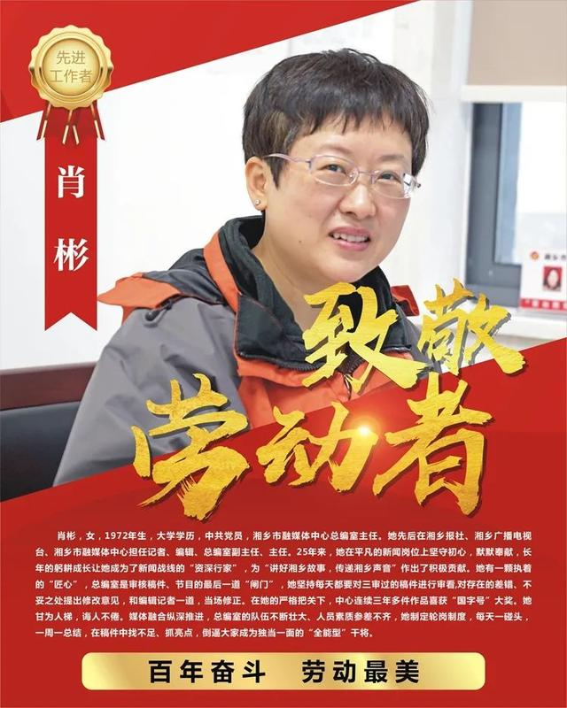
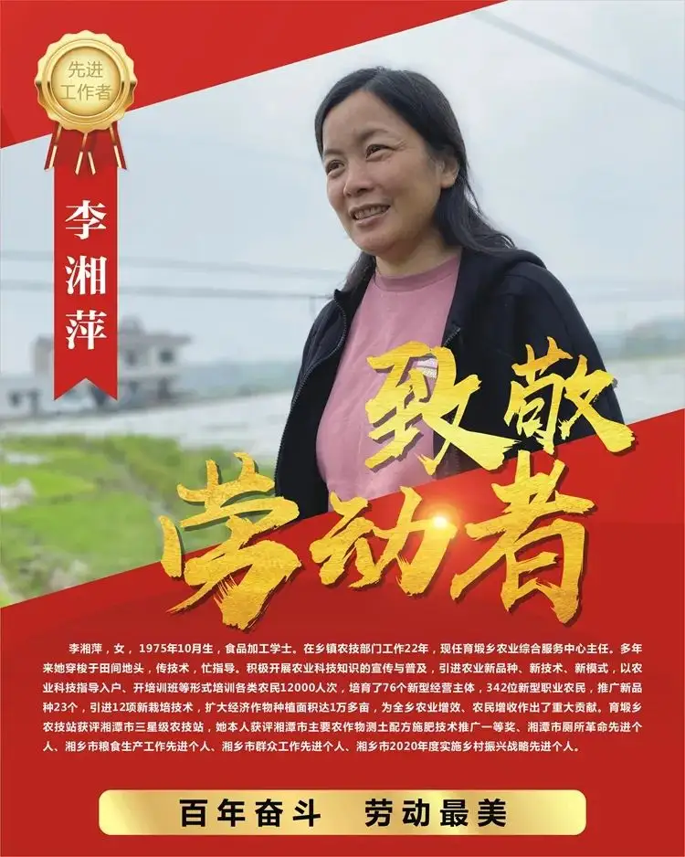
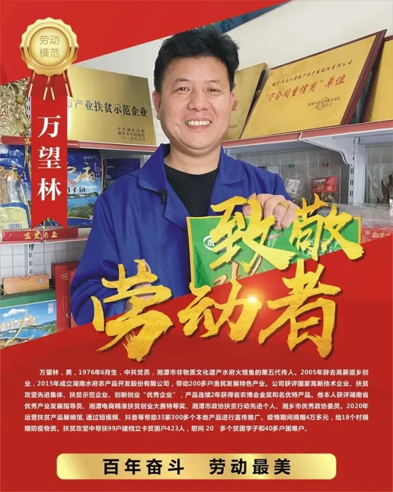
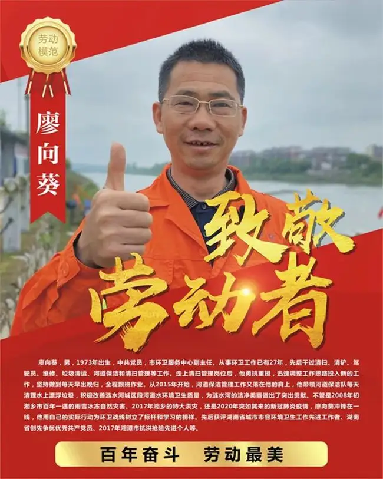
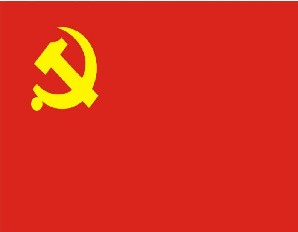
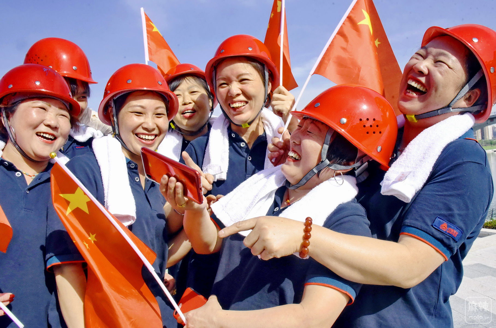
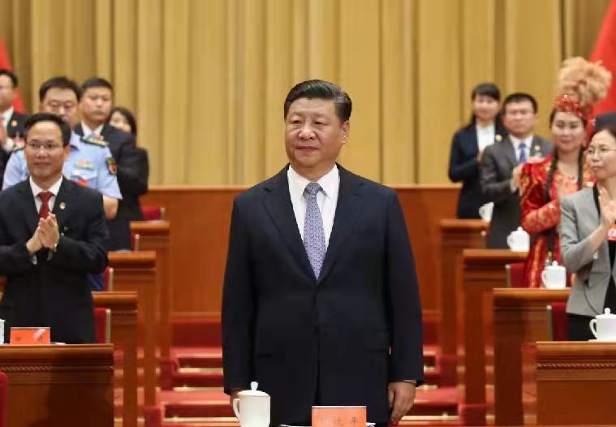
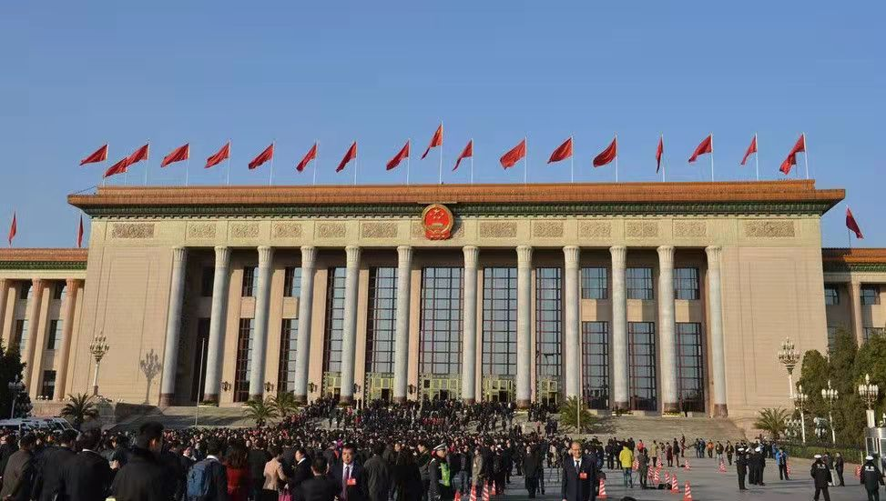
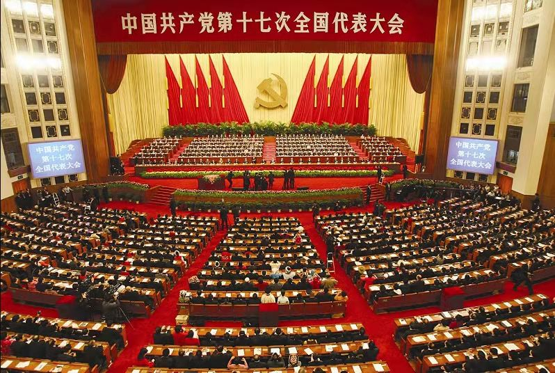
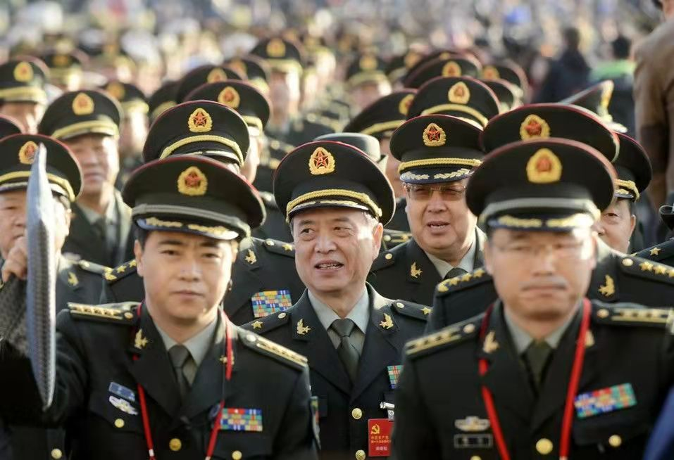

致敬劳动者

肖彬
1997年生，中共党员

李湘萍
1995年生，食品加工学士

万望林
1976年生，中共党员

廖向葵
1973年生，中共党员
共产党介绍
点击按钮了解

中国共产党是中国工人阶级的先锋队，同时是中国人民和中华民族的先锋队，是中国特色社会主义事业的领导核心，代表中国先进生产力的发展要求， 代表中国先进文化的前进方向，代表中国最广大人民的根本利益。党的最高理想和最终目标是实现共产主义。中国共产党以马克思列宁主义、毛泽东思 想、邓小平理论和“三个代表”重要思想作为自己的行动指南。在社会主义初级阶段领导和团结全国各族人民，以经济建设为中心，坚持四项基本原则， 坚持改革开放，自力更生，艰苦创业，为把我国建设成为富强、民主、文明、和谐的社会主义现代化国家而奋斗。
中国共产党是中国工人阶级的先锋队，同时是中国人民和中华民族的先锋队，是中国特色社会主义事业的领导核心，代表中国先进生产力的发展要求， 代表中国先进文化的前进方向，代表中国最广大人民的根本利益。党的最高理想和最终目标是实现共产主义。中国共产党以马克思列宁主义、毛泽东思 想、邓小平理论和“三个代表”重要思想作为自己的行动指南。在社会主义初级阶段领导和团结全国各族人民，以经济建设为中心，坚持四项基本原则， 坚持改革开放，自力更生，艰苦创业，为把我国建设成为富强、民主、文明、和谐的社会主义现代化国家而奋斗。
二十大意义
点击按钮了解

二十大召开的重大意义是什么？目前党的二十大会议暂未召开，召开时间是2022下半年，大会召开的意义是：我们党 进入全面建设社会主义现代化国家、向第二个百年奋斗目标进军新征程的重要时刻召开的一次十分重要的代表大会，是 党和国家政治生活中的一件大事。
劳动模范
点击按钮了解

劳动模范简称劳模，在社会主义建设事业中成绩卓著的劳动者，经职工民主评选，有关部门审核和政府审批后被授予的荣誉称号。
劳动模范分为全国劳动模范与省、部委级劳动模范，有些市、县和大企业也评选劳动模范。中共中央、国务院授予的劳动模范为“全国劳动模范”，是中国最高的荣誉称号。与此同级的还有“全国先进生产者”、“全国先进工作者”称号。
劳动模范是民族的精英、人民的楷模，共和国的功臣。
回看大会
中国共产党第十九次全国代表大会（简称党的十九大）于2017年10月18日至10月24日在北京召开。
2017年10月18日上午9:00，中国共产党第十九次全国代表大会在人民大会堂开幕。习近平代表第十八届中
央委员会向大会作了题为《决胜全面建成小康社会 夺取新时代中国特色社会主义伟大胜利》的报告。
这次大会的主题是：不忘初心，牢记使命，高举中国特色社会主义伟大旗帜，决胜全面建成小康社会，夺取新
时代中国特色社会主义伟大胜利，为实现中华民族伟大复兴的中国梦不懈奋斗。
党的十九大，是在全面建成小康社会决胜阶段、中国特色社会主义发展关键时期召开的一次十分重要的大会。承担着
谋划决胜全面建成小康社会、深入推进社会主义现代化建设的重大任务，事关党和国家事业继往开来，事关中国特色
社会主义前途命运，事关最广大人民根本利益。
2017年10月24日，中国共产党第十九次全国代表大会在选举产生新一届中央委员会和中央纪律检查委员会，通过关于十
八届中央委员会报告的决议、关于十八届中央纪律检查委员会工作报告的决议、关于《中国共产党章程（修正案）》的决
议后，在人民大会堂胜利闭幕。
中国共产党第十八次全国代表大会（简称中共十八大）于2012年11月8日在北京召开。中央确定，党的十八大代表
名额共2270名，由全国40个选举单位选举产生。
2012年11月8日9:00在人民大会堂大礼堂举行。大会选举了新一届的中共中央领导层，包括中央委员会委员、
中央候补委员、中央纪律检查委员会委员。在之后召开的中央委员会上选举中央委员会总书记、中央政治局、中
央政治局常务委员会、中央书记处、中共中央军委等。2012年11月14日12时许，在人民大会堂胜利闭幕。大会的
秘书长为习近平，副秘书长为刘云山、李源潮、栗战书。


2007年10月15日，中国共产党第十七次全国代表大会在北京人民大会堂隆重开幕。胡锦涛、江泽民、
吴邦国、温家宝、贾庆林、曾庆红、吴官正、李长春、罗干等出席开幕会。
中国共产党第十七次全国代表大会于2007年10月15日至21日在北京召开。大会主题是：高举中国特色
社会主义伟大旗帜，以邓小平理论和“三个代表”重要思想为指导，深入贯彻落实科学发展观，继续解放思
想，坚持改革开放，推动科学发展，促进社会和谐，为夺取全面建设小康社会新胜利而奋斗。胡锦涛代表
第十六届中央委员会向大会作了题为《高举中国特色社会主义伟大旗帜，为夺取全面建设小康社会新胜利而
奋斗》的报告。


十九大
华夏成长
我们的邮箱：884548259@qq.com 3049904776@qq.com
我们的电话：18713653114
我们的电话：18713653114